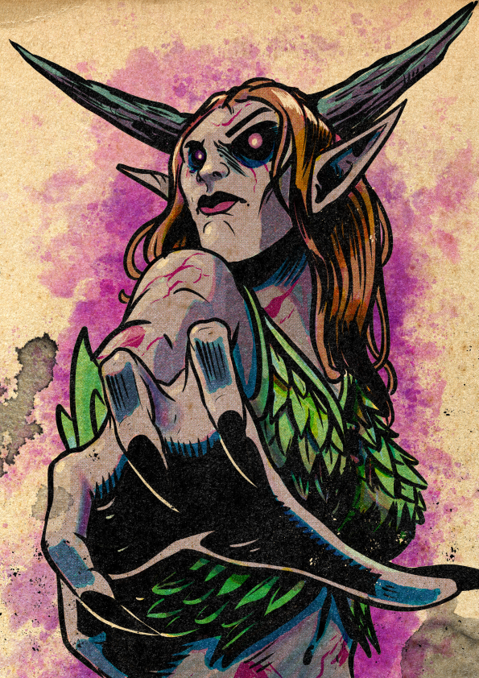

Clasiena died once. Wode elves do not, as a rule — they live long and dangerously in the forests called wodes — and so the death was already an unjust death, the sort revenants rise from. She rose. Her body is not the body she had. The magenta blooms in her skin are not pigment. The horns and antlers were not hers in life. She kept her memories, her name, and her unfinished work, and lost almost everything else.
Her class is Elementalist. Her discipline is Void — the element of mystery, of teleportation and illusion and the spaces between solid things. The choice fits. She is a creature returned from somewhere her body should not have been able to go, and the magic she practices is the magic of that direction. She does not yet know the magic of how to stay in the world without being noticed by it.
In Alloy, Clasiena is the team's most unsettling presence. She is also the most powerful at range, the most capable diviner, and — being already dead — the hardest to make finally so.
The Elementalist's primary characteristics are Reason and Intuition; Clasiena maxes both. The flat zeros in Might and Agility are not infirmity — they are a body that does not move with urgency anymore. She does not run. She does not strike with her hands. Almost every ability on her sheet rolls on Reason, with a few branching to Intuition or Presence; the array supports a caster who never needs to engage in melee unless she chooses to.
| Stat | Value & Source |
|---|---|
| Size | 1M — medium (from wode elf former life) |
| Speed | 5 — Revenant base. She did not take a Previous Life ancestry trait, so wode elf's Swift does not apply. |
| Stability | 0 |
| Damage Immunities | Cold 1, Corruption 1, Lightning 1, Poison 1 (= level) |
| Damage Weakness | Fire 5 — and fire damage destroys her body while she is inert (see Tough But Withered) |
| Enchantment | Of Destruction — bonus to rolled damage with magic abilities |
| Wealth | 1 |
| Renown / XP / Hero Tokens | 1 / 0 / 0 (Renown from Mage's Apprentice career) |
The Elementalist's heroic resource is Essence: a measure of attuned elemental energy. It accrues at the start of every turn, and is replenished whenever someone within ten squares takes elemental damage of a kind Clasiena can perceive — which is most kinds.
| Trigger | Gain |
|---|---|
| Start of your turn | +2 |
| First time in a round that you or a creature within 10 squares of you takes damage that isn't untyped or holy | +1 |
Several elementalist abilities — including her selected 3-Essence and 5-Essence picks — can be persisted. Maintaining a persistent ability in combat reduces the essence she earns at the start of her turn by the ability's persistent value. Behold the Mystery persists for 1; Conflagration persists for 2. While both are running at full strength, she gains −1 essence at the top of her turn instead of +2. The mechanic is a budget: how many spells does she keep open, and how aggressively does she lean on Hurl Element and Practical Magic (free actions or zero-essence maneuvers) instead?
Revenants rise from the grave through a combination of unjust death and burning desire for vengeance. They are sustained on pure will. They retain their memories and personality from life. They do not need food, water, or air. They are not necromantic — they are not the same kind of dead as zombies or wraiths. They are the kind that came back on purpose.
| Trait | Function |
|---|---|
| Tough But Withered | When her Stamina reaches the negative of her winded value (−9), she becomes inert instead of dying. She falls prone and can't stand. She continues to observe her surroundings, but can't speak, take main actions, maneuvers, move actions, or triggered actions. While inert, if she takes any fire damage, her body is destroyed and she dies. Otherwise, after 12 hours, she regains Stamina equal to her recovery value. |
| Damage Modifier | Immunity to Cold 1, Corruption 1, Lightning 1, Poison 1 (= her level). Weakness to Fire 5. |
As a maneuver, she places a magic sigil on a creature within 10 squares. When she places a sigil, she can decide where it appears on the creature's body, and whether the sigil is visible only to her or to all creatures.
She always knows the direction to the exact location of a creature who bears one of her sigils and is on the same world. She can have an active number of sigils equal to her level (1 at level 1), and can remove a sigil from a creature at will (no action required). If she already has the maximum number of sigils activated and places a new one, her oldest sigil disappears with no other effect.
Vengeance Mark is a tracking device with a fuse. Mark someone in a market crowd, follow them across a city — across worlds, as long as it's the same world she's currently on — and choose the moment to set off the sigil at up to ten squares' distance. The campaign hook (a nightmare-monster she has been chasing across the timescape) is exactly what this trait was built to support, provided she can ever get close enough to mark it.
Before she died, Clasiena was a wode elf — one of the children of the sylvan celestials, who treat the elf-haunted forests called wodes as their domain by birthright. The wode elf reputation for snatching wandering children is something they earn deliberately. Humans, the wode elves agree, should fear the trees.
Revenants only get their former-life ancestry's traits if they specifically select a "Previous Life" Revenant Trait. Clasiena instead spent her two ancestry points on Vengeance Mark. She therefore does not get any wode elf abilities — no Wode Elf Glamor, no Forest Walk, no Swift, no Otherworldly Grace. She kept the size (medium) and the cultural memory; she did not keep the elf body's gifts. Her speed is 5, not 6. She cannot magically blend in. The wode is something she remembers, not something she still inhabits.
From the class description: "Air for movement. Earth for permanence. Fire for destruction. Water for change. Green for growth. Rot for death. Void for the mystery." Clasiena chose Void.
Choose one of the following effects:
Some elementalist abilities have a persistent effect entry. When she uses a persistent ability, she decides whether to maintain it, and starts doing so immediately after first use. While maintaining a persistent ability in combat, she reduces the essence she earns at the start of her turn by the ability's persistent value. All active persistent abilities end at the end of the encounter.
Enchantment of Destruction — A bonus to rolled damage with magic abilities.
Ward of Delightful Consequences — A protective field of void magic absorbs violence aimed at her, then lets her hurl it back. The first time each round that she takes damage, she gains 1 surge.
"Void is the element of the mystery. Void abilities warp space and reality, allowing you to teleport, create illusions, and make things incorporeal."
The range of Clasiena's Magic, Ranged, Void abilities is increased by 2 squares.
She instantly recognizes illusions for what they are, she can see invisible creatures, and supernatural effects can't conceal creatures and objects from her. Additionally, she always knows if an area or object she observes is magical or affected by magic, and she knows the specifics of what that magic can do.
A Beyonding of Vision is a freebie that is enormous out of combat. Clasiena is essentially a walking detect magic with detailed read-outs, plus illusion-piercing and see-invisible. In a city as soaked in supernatural traffic as Alloy, this is the single most useful trait on any of the cell's character sheets. Whoever named her as collateral may not have realized what they were bringing in-house.
For each Victory she has, she can target one creature. Each target gains the benefit of her A Beyonding of Vision feature until the end of her next turn, but doesn't gain the use of the Shared Void Sense ability.
She teleports the target up to a number of squares equal to her Reason score (2). If the target moves to trigger this ability, she can teleport them at any point during the move.
Spend 1 Essence: Teleport the target up to twice her Reason score (4) instead.
Two signatures, one 3-Essence, one 5-Essence. Two are void abilities; two are not (Unquiet Ground is Earth; Conflagration is Fire — interesting given Clasiena's fire weakness, but the spell is hers to control). Three of the four are area effects: she fights in zones.
Clasiena has Fire weakness 5. Her selected 5-Essence ability is a fire spell. The character is comfortable calling down the element that is fatal to her body — she is the one casting, so the catch lies elsewhere: the spell's area can catch her allies, an enemy can throw fire back at her, and an unlucky tier-1 outcome can have her standing in burning terrain. The thematic read is sharp: the thing she most needs to control is the element that can erase her, and she has chosen to learn its hardest spells first.
| Element | Choice & Note |
|---|---|
| Environment | Wilderness — her people did not try to tame the terrain they lived in. (Skill: Alchemy.) |
| Organization | Bureaucratic — steeped in official leadership and formally recorded laws. (Skill: Disguise.) |
| Upbringing | Martial — raised by warriors. (Skill: Intimidate.) |
| Language | Yllyric (wode elf cultural) |
"For long years, you studied magic under the mentorship of a more experienced mage." The career and the inciting incident are the same arc seen from two angles: she went to a master to learn discipline, and the discipline went wrong.
The Familiar perk is selected but the specific form, name, and personality of Clasiena's familiar are not recorded in the source. Worth establishing in Session Zero: what came with her when she came back? An animal she had in life? Something that found her after? A small wode-shape that was waiting?
Caelian (default), Yllyric (culture, wode elf), Hyrallic (career).
Six Lore skills on a single sheet is unusual. Clasiena is the unit's scholar by a wide margin — the one who has read the book, has heard the story, has names for the monsters and a working theory of the timescape. Combined with A Beyonding of Vision (which reads magic in detail) and Vengeance Mark (which tracks across worlds), she is the team's investigator-of-the-supernatural by every available measure.
From the Draw Steel complication: "You came into contact with a mote of pure chaos energy, or were subjected to a supernatural effect or object that fused chaos into your very being. Now you can sprout and retract limbs in a way that horrifies unprepared onlookers."
| Aspect | Effect |
|---|---|
| Chaos Touched Benefit | She gains an edge on the Escape Grab, Grab, and Knockback maneuvers. Additionally, she can hold an additional item even when her hands are full. |
| Chaos Touched Drawback | While dying, she grows and retracts uncoordinated limbs, imposing a bane on her power rolls. (Note: in her case, "while dying" is a complicated category — see Tough But Withered. The drawback applies during the standard dying state, which she enters only briefly before her body goes inert.) |
The complication's narrative dovetails neatly with the Inciting Incident — the nightmare-pulling event would plausibly count as "a supernatural effect or object that fused chaos into your very being." Whether the chaos is the cause of her return, the result of it, or an unrelated overlay is open to the player to decide.
From the Draw Steel inciting incident: "Your attempts at magic have always been unpredictable. A powerful mage promised to help you gain control. During your training, a terrible nightmare caused your body to flare with magic and pull the monster of your nightmare into the waking world. The horror escaped. You left, seeking to vanquish their terrible vileness."
The incident text does not specify: how long ago this was; the master's identity or current status (still living? still teaching? complicit? hunting her?); the nightmare-horror's nature, name, or current whereabouts; whether the horror is what killed her (making her revenant return the second event in this chain). The campaign roster's description of Clasiena as "came back from death with unfinished business" is consistent with the nightmare being involved in her death. To be confirmed in Session Zero.
The following is drawn from the Collateral campaign summary, which is explicitly marked as draft / provisional. Details are subject to change in Session Zero.
The premise: the player characters wake in the same holding cell in Alloy and are told "The debt has defaulted. You belong to the Saffron Seal now." Clasiena was already moving across the timescape in pursuit of a thing she let into the world; waking up held in Alloy is, at best, a long delay on a hunt that has already cost her her life once.
Combat: area caster and battlefield controller. Three of her four selected abilities are areas; Hurl Element gives her a free strike at range every turn; Practical Magic is a free maneuver every turn. She does damage at a distance, marks single targets at distance, and pulls allies through space to where they need to be.
Out of combat: the diviner. A Beyonding of Vision plus six Lore skills plus Vengeance Mark's tracking plus Subtle Relocation's positioning makes her the team's scrying-and-following specialist. If the team is asking "what is this place actually doing?" or "where did that go?", she answers.
None of the campaign roster's listed factions are explicitly tied to Clasiena. The most plausible candidate for "who named her as collateral" — and thus the campaign's central mystery as applied to her specifically — is whoever benefits from her not finishing the hunt. That set probably includes the nightmare-horror itself, the mage who was supposed to be controlling her training, and any party with a stake in keeping unstable mages from finding what they let loose.
Three threads pull through Clasiena's sheet.
The first is the hunt: she let a thing into the world, and she is here to put it back. Vengeance Mark is built for it. Lore Monsters and Lore Timescape are built for it. The inciting incident hands her the chase.
The second is the return: she came back from the dead, and the body she came back in is not the body she had. Tough But Withered makes the death of her body conditional on fire and 12 hours. Whether she stays in this body, finds a way back to her old one, or accepts that the wode elf is over — that is a story the mechanics support without forcing.
The third is the discipline: she went to a teacher to learn control, and what she learned in the end is that her magic is what it is. Void discipline is, in a sense, the right teacher's second attempt — the practice of working with the space between, the absences, the things that are not in their seats. Whether she can ever trust her magic enough to dream again without consequence is the long arc.